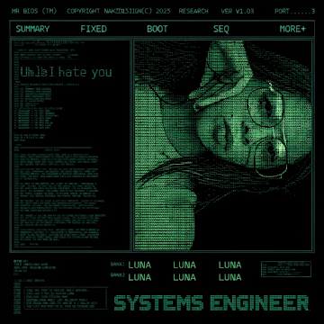

Personal Portfolio Website
Created a personal portfolio website to showcase my skills, experience, and projects.

Student of System Engineering of the 5th semester...
Passionate about learning, creating, and innovating.
Hi! I'm Luna Alejandra Sandoval (Bl4ckM0oN), a System Engineering student at the Universidad Distrital Francisco José de Caldas.
I'm building strong foundations in programming, system logic, and problem solving, while exploring how intelligent systems and secure infrastructures are designed.
Created a personal portfolio website to showcase my skills, experience, and projects.
You can reach me through the following channels: